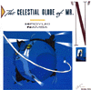

strange music page
japanese progressives * * * nanba hiroyuki/sense of wonder
#難波弘之とセンスオブワンダーです、ファルコムの難波さんのアレンジのＣＤも持っているだけ載せました。サントラなんかも本当は沢山有るのかも知れませんが、調べきれないので解る範囲で書きました。難波弘之名義のアルバムでは廃盤がとても多く...って書いてたんですけど、いつのまにか揃ってきました....あとどーしても"GREEN REQUIEM"だけ聴きたいんですけど、再発を望みます。
#えーと、祝！再発。でもほとんどの音源を聴いてからだったので個人的にはそんなに嬉しくないです。というか"GREEN REQUIEM"を再発してください、ください、おねがい。
|
- 難波弘之
- センス オブ ワンダー (sense of wonder)
- A.P.J.
- Nuovo Immigrato
- ゲームミュージック
|
#デビューアルバム、若干プログレよりの８０年代ポップ。難波弘之さんの原点だと思います。各曲名は難波氏が好きなＳＦのタイトルから。ジャケは手塚治大先生。94年に1500円シリーズで再発されました。他のアルバムも再発してほしいです。
- アルジャーノンに花束を
- 都市と星
- ソラリスの陽のもとに
- リングワールド
- 火星人ゴーホーム
- 夏への扉
- 地球の緑の丘
- 鋼鉄都市
- 虎よ！虎よ！
- いちご色の窓
- 難波弘之 (vocals,keyboards)
- 村上秀一 (drums on 1.8.)
- 小原礼 (bass on 1.8.)
- ペッカー (percussions on 1.8.)
- 安田裕美 (acoustic guitars on 2.7.)
- 三枝成章 (voice,VC-10 on 3.)
- そうる透 (drums on 9.)
- 鳴瀬喜博 (bass on 3.9.)
- 吉田美奈子 (voice on 10.)
- リンダヘンリック (vocals on 7.)
- 織田哲郎 (vocals on 9.)
- 北島健二 (guitars on 9.)
KING RECORDS/SEVENS SEAS: KICS-8013
#渋谷ディスクユニオンにて.....100円。ちょっと涙、出てきました。10倍の値段でも買うよ、俺。
えーと見本盤のLPでして、チラシみたいなのが入ってました「難波弘之 エアー・レコード移籍第一弾!!」ってのが。なんか販売促進用のプロモ盤みたいです、なんだか難波さんの写真とか一緒に入ってたし、何故か。
相変わらずSF好きなのがわかる曲名....そのまんま。
SIDE A
- オーヴァーチュア
- パーマー・エルドリッチの三つの聖痕
- EYES
- HANDS
- TEETH
- 夢中楼閣
SIDE B
- パーティ・トゥナイト(地球を遠く離れて)
- ロスト・ラヴ(雨の宇宙空港)
- 渇きの海
- シルバーグレイの街
- 難波弘之 (keyboards,vocals)
- 山下達郎 (chorus)(percussions on A-3.B-1.4.)
- 吉田美奈子 (chorus on B-4.)
- マック清水 (percussions on B-1.)
- 浜口茂外也 (percussions on B-4.)
- そうる透 (drums on A-2.)
- 青山純 (drums on A-3.B-1.3.4.)
- 田辺モット (bass on A-2.)
- 伊藤広規 (bass on A-3.B-1.3.4.)
- 北島健二 (guitars on A-3.B-3.)
- 椎名和夫 (programming,chorus)(guitars on B-1.B-4.)
RVC/Air RECORDS: RAL-8503 (1981)
#最近アニメ系の再発の中に混じってた、難波弘之のプログレ度の高いアルバムです。何せ元ムーンダンサーの厚見麗の参加してた頃のアルバムですから。モロELPフレーズをまじえつつ80年代らしいプログレ音でした。6,7曲目は厚見麗の曲です...昔のファルコムのゲーム音楽みたいな感じの曲です。
大仰でこっぱづかしいボーカル曲はともかくとして、最近じゃ誰もやってない微妙にドラマチックな類の音です、この手の音が好きならばとりあえず買うべき.....特にこんなページを見てしまうような人には、\1700だし。
機材のクレジット...CX-3,Prophet-5,MS-20,DX-7,NOVATRON,Poly-6なんて辺りが時代を感じさせます。RhodesやMoogは好きで使ってるんだろうけど。
- BIG PROLOGUE
- VEGA PEJOUR CRUSE (FLIGHT #39)
- SADISTIC PYCHIC TIGER
- MOONLIGHT SERENADE
- SUPER BAROQUCE PRINCESS
- 太陽の戦士
- ベアトリスの簪
- BIG INTERLUDE
- 難波弘之 (keyboards,chorus)
- 厚見麗 (keyboards)
- そうる透 (drums,percussions)
- 小室和之 (vocals,bass)
TOKUMA JAPAN: TKCA-71939
#
recipe.のキムラさんに譲っていただきました。もう頭2曲からイイ曲〜っすね。後半は未聴の曲たちです、この時期...充実してますねぇ。
- 鵺
- 飛行船モルト号
- Molt Memorial Hospital
- トロピカル万国博 (Tropical Exposition)
- 空中の音楽 (Music in The Air)
- Message
- 百家争鳴
- Solar Love
- 永遠へのパスポート (Passport to Eternity)
- 難波弘之 (keyboards)
- そうる透 (drums)
- 田辺モット (bass)
- 佐久間正英 (guitars,computer)
- 北島健二 (guitars)
- 小川銀二 (guitars)
RVC/Air RECORDS: RAL-8802 (1982)
#結構このアルバムはクラシック色が強いです。でも根本的なポップセンスは一緒かも、3曲目はU.K.のカバーです、なんかソフトな感じ。
- シャコンヌ
- ブルジョワジーの秘かな愉しみ
- 夢せぬ夢を (rendez-vous 6:02)
- アラベスク第２番
- 時計の匂い
- アルマンドとメヌエット (フランス組曲第３番)
- オペラの怪人
- スピーチレス〜ロミオとジュリエット
- 月下の舞踏
- 難波弘之 (keyboards,vocals)
- 小室和之 (bass)
- そうる透 (drums)
- 渡辺香津美 (guitars on 3.4.)
- 藤山明 (flute on 6.7.)
- 神崎愛 (flute on 1.)
- 溝口肇 (cello on 8.)
- 池田DAMEO (synthesizer operating on 2.)
- 中西俊博 (electric violin solo on 3.)
RVC/Air RECORDS: RHCD-522 (1985)
#迷える方舟....めっちゃカッチョイイです。プログレ好きにはかなりたまらない物がある曲です。やっぱし日本の他のマイナープログレ系とは(良くも悪くも)曲の出来が違います。

- 時間創造
- 16世紀の空想少年
- SLOW DOWN 〜流れゆく愛
- 薔薇と科学
- 火の洗礼
- 迷える箱舟
- 天球儀の人々
- 静寂から５番目の改革
- 20世紀の夢想少年
- 難波弘之 (keybaords,vocals)
- 小室和行 (bass,vocals)
- 鈴木とおる (drums)
RVC/Air RECORDS: R32A-1007 (1986)
#ベスト盤です、このアルバムは割と手に入りやすいかもしれないです、何回か再発されてますし。夢中楼閣とか迷える箱舟とかー、すごい格好良いです。個人的には難波弘之さんってプログレとポップスの中間くらいの存在だと思ってます。なんか居そうで居ないんですよね、適度にポップで適度にプログレで....絶妙のセンスとしか言えないような混ぜ具合が気に入ってます。
- オーヴァーチュアー
- パーマーエルドリッチの三つの聖痕
part 1: Eyes
part 2: Hands
part 3: Teeth
- 夢中楼閣
- 渇きの海
- 鵺
- 飛行船モルト号
- 百家争鳴
- HIRU NO YUME
- アルマンドとメヌエット（フランス組曲第３番）
- オペラの怪人
- アラベスク第２番
- 迷える箱船
- 静寂から５番目の革命
- 難波弘之 (keyboards,vocals)
- 田辺モット (bass on 2.5-7.)
- 荻原基文 (bass on 8.)
- 小室和行 (bass on 9-13.)
- そうる透 (drums,percussions on 2.5-11.)
- 鈴木徹 (drums,percussions on 12.13.)
BMG victor: BVCR-5021 (1986)
#Sense of Wonder名義での1枚目です。これもかなり手に入りにくいかも。バンド名義でもやっていることは一緒で、ポップなプログレです。でもちょっとポップすぎるかもしれない...あまりにも80年代で聞いてて恥ずかしい所もあります。ま、そこが魅力でもあるんですけど。
- メビウスナイト
- 都市迷宮
- Rain
- 碧い星で
- 万華鏡
- Moon Water
- Windy Symphony
- オーニソプター
- ナットロッカー (Live at Sound Valley)
- Less is more (solo piano)
- 難波弘之 (keyboards,vocals)
- 小室和之 (bass,vocals)
- 鈴木徹 (drums,vocals)
- 田口俊 (lyrics)
RVC/Air RECORDS: R32A-1027 (1987)
#センスオブワンダー名義での2枚目、drumsが小森啓資さんにかわっています。前作よりもプログレ色が強くなったかも、いまどきでないポップ感覚は相変わらずですけど。
これ以降はバンド名義のリリースは無いです。今1999年なんで、もう10年以上リリース無いことになります。でも今頃出せば案外売れるかも...最近この手の音って全然無いですし。
- AQUAPLANET (part 1)
- 7 1/2 [Seven Half]
- VERTIGO -めまい-
- FASCINATING LADY
- U/W Travelers
- AQUAPLANET (Part 2)
- ELFHAM Part 1
Der Erdgeist
Der Feuergeist
Der Wassergeist
- DUNE
- 難波弘之 (keyboards,vocals)
- 小室和之 (bass,vocals)
- 小森啓資 (drums,vocals)
BMG Victor/Air RECORDS: R32A-1040 (1988)
いやまぢで、1曲目の｢薔薇と科学」を試聴して気づいたら手に持ってました、久々に難波弘之らしいプログレ聴いたように思います。「オーニソプター」(SOWの曲)なんてあんまり違うので最初何の曲かわかりませんでした。
ちなみに水野正敏、音でかすぎ。(2001.1.13)
- 薔薇と科学
- Jellyfish Garden
- Dimetra
- Ameba in Maze
- 百家争鳴
- Progroove
- 阿梵(Ah bon)
- オーニソプター
- 難波弘之 (piano)
- 水野正敏 (bass)
- 山木秀夫 (drums)
KING RECORDS: KICP-757 (2000.11.22)
#難波弘之さんと元ノヴェラの五十嵐久勝さんのプロジェクト、元ユニコーンの手島いさむさんやローリー寺西さんや元
新月の津田晴彦さんなど多彩なゲストを迎えています。音の方はどちらかというと難波弘之さんの色が強く出た感じで、センスオブワンダー + 五十嵐久勝といった感じでしょうか。
- 音信
- Fly Away
- 少年の丘
- FLOWER SUN RAIN
- 花・太陽・雨
- NATURAL HEART
- 陽が昇るまでに
- ENDLESS NEWS
- 難波弘之 (keyboards,vocals)
- 五十嵐久勝 (vocals)
- 手島いさむ (guitars on 2.)
- 津田治彦 (guitars on 3.)
- 太田明 (drums on 2.)
- MOTTO (bass on 3.5.6.)
- そうる透 (drums on 3.4.5.7.)
- 下田武男 (drums on 6.)
- 根岸孝旨 (bass on 7.)
- ROLLY (guitars on 6.)
- 菅野美子 (chorus on 6.)
- 井上尭之 (guitars on 5.)
- 松本慎二 (bass on 2.)
- TOKIE (uplight bass on 1.)
TEICHIKU/TRYCLE RECORDS/reveil: TCCN-30040 (1997.9.21)
#今までのファルコム系のゲームミュージックのベスト。要するにこれを持っていれば気合入れて今までのゲーム音楽を買う必要は無いかも、とりあえず一通りおいしいところは入っていて、加えてNEW ARRANGEが3曲追加されています。難波弘之名義のCDよりもプログレ度は高いかも、ゲーム音楽っぽいプログレ好きな人は必須と思います。
桜庭統を買う前にこっちを買ったほうが良いと思います。
- オープニング
- TO MAKE THE END OF BATTLE
- PALACE OF SALMON
- 失われたタリスマン「森」
- ルシフェルの水門「クラーケン」
- 消えた王様の杖「生還」
- 町「ペンタウァＩ」
- 呪われたオアシス「砂漠」
- キング・ドラゴン
- COMPANILE OF LANE
- 暗黒の魔道士「ブルードラゴン」
- TERMINATION
- エンディング I
- FIRST STEP TOWARDS WARS（Ｙsより）
- TOWER OF THE SHADOW OF DEATH（Ｙsより）
- フィールド（英雄伝説より）
- 難波弘之 (keyboards,arrangements)
- 鳴瀬喜博 (bass on 1.2.3.7.10.11.12.13.)
- 小森啓資 (drums on 2.3.4.5.6.9.10.12.)
- 村上"ponta"秀一 (drums on 7.13.)
- 関慶和 (drums on 14.15.)
- 日戸修平 (bass on 14.15.)
- 大谷令文 (guitars on 14.15.)
- 是方博邦 (guitars on 2.)
- 永井充男 (guitars on 4.)
- 一噌幸弘 (笛 on 8.)
- char (guitars on 7.)
- そうる透 (drums on 11.)
- 井上大輔 (sax on 13.)
- 北島健二 (guitars on 11.)
- 白浜久 (guitars on 15.)
- 梶原順 (guitars on 16.)
King Record/Falcom: KICA-1056 (1992.2.21)
#ソーサリアンです、今は知らない人の方が多いかも。昔PC-8801とか9801で流行った日本ファルコムのゲーム音楽のアレンジCDなんですけど、これが結構はまります。昔ゲームやったこと有るならなおさらかも。
アレンジ的には色々、なんでも有りですね。ハードなのも有るしジャズっぽいのも有りますし、結局難波さんぽくはなってるんですけど。初めて難波弘之を意識的にこのCDだったと思います、今も好んで聴いてます。
- オープニング
- 城「ここで逢えるね」
- 消えた王様の杖（ダンジョン）
- 失われたタリスマン（森）
- ルシフェルの水門（クラーケン）
- 呪われたオアシス（砂漠）
- 暗黒の魔道士（ブルー・ドラゴン）
- 呪われたクイーンマリー号（船内）
- 氷の洞窟（洞窟II）
- 街「ペンタウァ」
- キング・ドラゴン
- エンディング I
- 難波弘之 (arrangement,keyboards,synthesizers)
- 小森啓資 (drums,percussions on 2.3.4.5.6.9.12.)
- 村上"ポンタ"秀一 (drums on 11.13.)
- 鳴瀬喜博 (bass on 8.10.11.13.)
- つのだひろ (drums on 10.)
- そうる透 (drums on 8.)
- 一噌幸弘 (笛 on 7.)
- 北島健二 (guitars on 8.)
- char (guitars on 11.)
- 井上大輔 (sax on 13.)
- 永井充男 (guitars on 5.)
KING RECORDS/STAR CHILD: K32X-7123 (1988)
#ソーサリアンのsuper arrange versionの第2弾で内容は相変わらず色々なものです。CDの後半はoriginal soundtrack versionということでFM音源ほとんどそのまんまの音です。こーゆーチープなのもこれはこれでいいかも。
意外なところで一噌幸弘さんとか参加してます。
SUPER ARRANGE VERSION 2
- Beautiful day
- The choice is yours
- 魔性の島
- 村（天の神々たち）
- 竪琴（天の神々たち）
- 村（メデューサの首）
- エンディングII
- track 8-27. original sound track version
- 難波弘之 (keyboards,arrangement on 1-7.)
- 小森啓資 (drums,percussions on 1.2.3.6.)
- 是方博邦 (guitars on 1.)
- 矢口博康 (soprano sax on 1.)
- Derek Jackson (bass on 1.2.3.)
- 一噌幸弘 (笛 on 2.)
- 松下英二 (bass on 4.6.)
- SQグループ (strings on 4.5.)
- 朝川朋之 (harp on 5.6.)
KING RECORDS: K32X-7708 (1988)
#えーとやっぱり日本ファルコムのゲームのサントラです。このCDは結構ハードな感じの曲が多いかも、結構このシリーズの中でも好きな一枚です。前半はやっぱりFM音源で、その後アレンジバージョンで、更にその後はなんかゲーム中のSEが入ってます「ドコドコ」とか「ガスッ」とかそんな感じの。
- タイトル (to make the end of battle)
- サルモンの神殿 (palace of salmon)
- 神殿の鐘撞堂 (companile of lane)
- ダーム (termination)
- ランスの村 (too full with love)
- track 1-25. original soundtrack version
- track 31-55. sound effects
all arrangement: 難波弘之
- 難波弘之 (keyboards)
- 鳴瀬喜博 (bass)
- 小森啓資 (drums)
- 是方博邦 (guitars on 26.29.)
- 平野文 (vocals on 30.)
KING RECORDS: K32X-7704 (1988)
- Dancing on the road（ユーザーディスク作成）
- 予感＝スティクス（オープニング）
- 貿易の街 レドモント（街）
- 翼を持った少年（ステージ入口）
- 灼熱の死闘（遺跡・溶岩地帯）
- 暗黒の罠（ティグレー採石場）
- バレスタイン城
- 破滅への鼓動（ガルバラン城）
- 最強の敵（ガルバラン）
- 旅立ちの朝（街・エンディング）
- wanderers from Ys（エンディング）
- 難波弘之 (arrangement,keyboards)
- 小森啓資 (drums on 7.9.)
- 根岸孝旨 (bass on 5.7.9.)
- 大谷令文 (guitars on 7.9.)
- 小田原豊 (drums on 5.)
- 三柴江戸蔵 (piano on 5.)
- 横関敦 (guitars on 5.)
- 山木秀夫 (drums on 6.8.)
- 高水健司 (bass on 6.8.)
- 兼崎順一 (orchestra arrangement on 3.10.11.)
KING RECORDS/Falcom:276A-7716 (1989)
#ファルコムのゲームのアレンジのミニアルバム。
- 神殿2 (palace of destruction)
- エンディングI
- 呪われたクイーンマリーン号「上陸後」
- 要塞突入
- Snow Blue
all arrangement: 難波弘之
- 難波弘之 (keyboards)
- 小森啓資 (drums)
- 渡辺直樹 (bass)
- 角田順 (guitars)
- 宮崎純子 (keyboards on 4.)
KING RECORDS: 150A-7712 (1989)